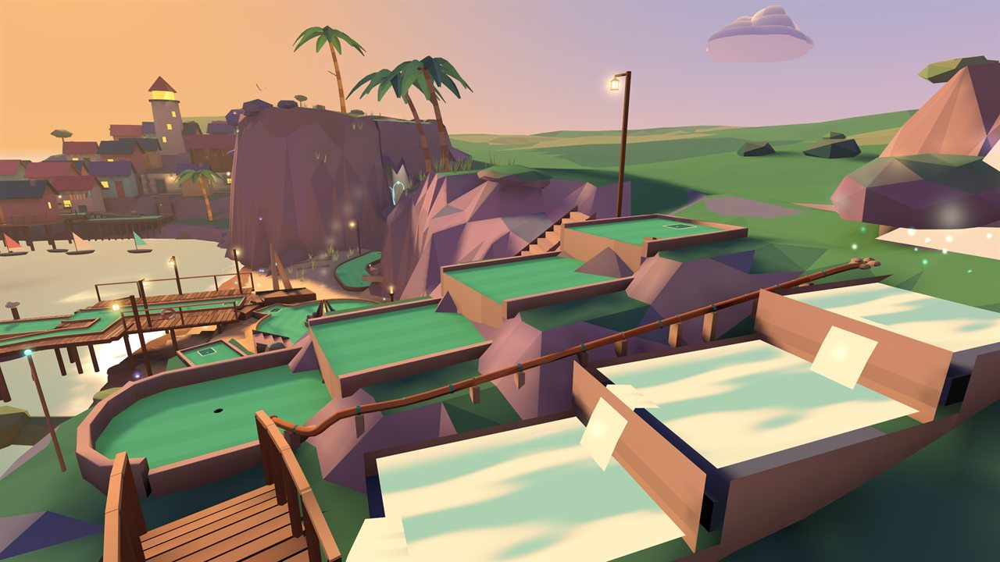

Course oneLantern Cove
A golden-hour seaside cove. Bank off a giant conch, putt along stilt-village boardwalks and through a glowing sea-glass grotto, send your ball down pipes and past a shipwreck, and finish under the lighthouse at the Lantern Heart. An ace sets off fireworks over the bay.